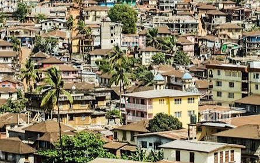

Add photo: images/purpose.jpgOur Purpose and Mission
Why visit Sierra Leone?
Sierra Leone combines long Atlantic beaches, protected rainforest and warm, welcoming communities. We help visitors plan trips that are easy to book and good for the people who live there.
We promote ethical, community-driven tourism that preserves wildlife, honors our historical heritage and empowers local coastal and rural communities.Read our full story
360+ kmof Atlantic coastline
18+ethnic groups and languages
8+protected nature reserves